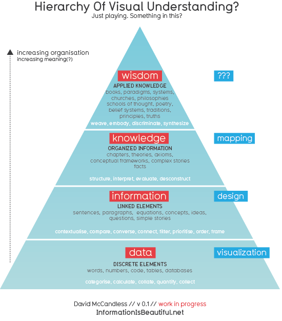

知识体系的思考与构建
前言
身处数据洪荒时代，我们几乎淹没在里无尽的数据流中，加之传统的书籍阅读越来越让位与 各种精心设计的手机应用，导致的结果就是我们的注意力、时间以及知识体系都非常碎片化。
我们回想最常见的情形，繁忙拥挤的地铁上，上班族无论男女都是低着头盯着手机，打开的 应用可能是今日头条，也可能是微信的公众号，迫不及待的想要获取在世界发生的各种信息， 也可谓秀才不出门，也知天下事，而这些信息成为大家的饭后谈资。但是即便我们每天花费 大量的时间来关注这些新闻以及最新的黑科技，其实是在浪费宝贵的时间和注意力，我们并 没有真正的成长（成长就是思维能力提升或者知识体系的完善）。究其原因很简单，数据和 信息不是知识和智慧，我们获取大量的数据和信息，但没有消化、组织以及完善信息，以此 构建个人的知识体系，更无法涉及多领域的迁移学习。本文主要是记录我在构建知识体系过 程的思考与感悟，以及利用哪些工具来辅助知识体系的构建。
正如狄更斯在《双城记》中写道，我们生活的时代是最好的也是最坏的时代，世界每天都以 越来越快的速度变化着，知识编程成为最重要的生产力，不断推动科技、技术快速向前发展。 想要跟上世界变化的速度变得更具有挑战，有句话最能反应这种挑战：你的时代正在无情的 抛弃你。本质上是你无法跟上时代前进的步伐，抑或者没有清晰的直觉看清时代发展的脉络。
知识体系
知识体系是个很大的话题，在这里我只是谈谈我的思考和理解。我对这个话题的思考源于我 同我女儿同处玩耍时候的观察，在她还只有半岁的时候，带她出去公园玩耍，发现当她看到 带眼镜的女人的时候，都表现的格外亲热，感觉她把带眼镜的女人都认成妈妈(她妈妈也带 眼镜)，似乎妈妈的概念在她的脑海中等同于带着眼镜的年轻女性；周岁之后，她对妈妈的 概念就更加清晰了，能够分清楚爸爸妈妈，开始理解爸爸妈妈之间的家庭关系等。这个微小 的成长变化，让我开始思考我们是如何构建自己的知识体系，以及知识体系应该包含些什么， 现代社会的科技发展对知识体系的构建的利弊？
框架
我更倾向于将人比喻成计算机，计算机由硬件和软件组成，知识体系更侧重于“软件”层面， 概念框架和模型框架构成核心操作系统，在操作系统之上开始生长各种技能和能力。
概念框架
知识体系是植根于脑海中的概念框架，可能我们没意识到我们是多么擅长对周遭的事物进行 分类以及命名。我们一生都在不断的学习、探索和理解周围的环境，不断吸收或者创造各种 概念，然后在概念之间建立连接，形成时刻在进化的概念知识图谱。概念体系在很程度上也 塑造我们的价值观、世界观和人生观，是我们处世的知识根基。
模型框架
当如果只有概念体系，那我们和移动硬盘无异，无法将概念体系高效的应用于日常问题。因 此知识提需要也需要包含模型框架，不同的人或者不同的场景对模型框架有不同的称谓，有 时叫方法论(套路)，有时也指各种复杂艰深的科学模型。此时此刻，我们的大脑里面就运行 着多个模型，有的模型已经被固化到身体之中变成了本能，比如你不需要思考如何走路、如 何吃饭，这些都非常自然的事情，但是回想婴儿时期的你可不是这样，你需要很大精力来掌 握和运用这些模型；而有点模型则需要付出更多的经历才能运行起来，比如投资股票、设计 软件或者下棋，这些都需要运行不同模型来完成任务。
DIKW

DIKW是Data, Information, Knowledge, Wisdom的缩写，由下而上不断萃取，由普通的数据 和信息变成高阶的知识和智慧。